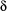

5 Flowers
Gert Smolka and Tobias Müller
Lindenmayer systems are used to model the development of plants (see [PL90]). They are basically rewriting systems, which generate a term describing the topology of a plant. The starting point is an initial term, which is successively expanded by replacing parts of it with the initial term itself. The final expansion of the plant is determined by the number of rewriting steps. The term describing a plant's topology (in short topology term) is a sequence of drawing instructions represented by an ordinary list. A graphical representation of such a plant can be obtained by appropriately interpreting the list holding drawing instructions. The semantics of the drawing instructions is given below, supposing a current state:
[...]a sequence of drawing instructions, whereby all modifications of the state are local to the sequence.
fdraw a line from the current position using the current orientation and the step-width
 .
. lturn the current orientation by  degrees to the left.
rturn the current orientation by degrees to the right.
The state represents the current position and the current orientation. The arc (used by rotations) and the stepwidth (used for moving from one position to another) are supposed to be constant while drawing.
Description of Flowers.oz
The variables FlowerA and FlowerB hold descriptions of plants using a proper record. Such a description consists of an initial state (fields at features xPos, yPos and angle), the term describing the topology (field at feature grammar and the field at feature start as initial value for the rewriting process), the parameters (field at feature stepWidth) and (field at feature  ), and the recursion depth (field at feature
), and the recursion depth (field at feature recDepth), which determines the number rewriting cycles. The central procedure of the program is DrawFlower. It implements a kind of rewriting system which interlaces expansion and drawing of the topology term. You may try to find new flower topologies by modifying the descriptions held by the mentioned variables FlowerA and FlowerB.
After starting the program a window pops up. The growing of the flowers can then be controlled by pressing the appropriate buttons which meaning ought to be self-explanatory.
The program Flowers3d.oz renders a three-dimensional flower. The principle remains unchanged only the computation for the drawing is slightly more complicated.